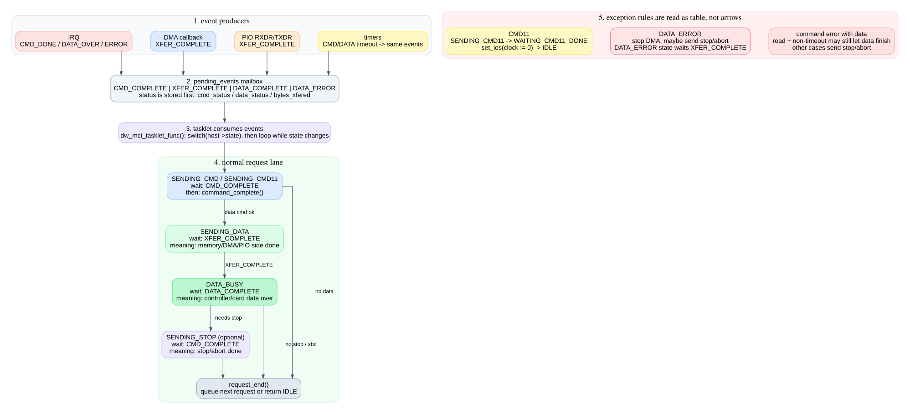
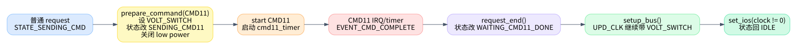

04. IRQ/timer/tasklet 状态机
这一篇是整个系列的核心。重点不是画出所有箭头，而是把状态机拆成“事件生产者”和“事件消费者”。dw_mci_interrupt()、DMA
callback、PIO 函数、timer
都只负责设置事件位；dw_mci_tasklet_func()
才根据当前状态消费事件并推进请求。

1. 事件位是 IRQ/timer 与 tasklet 之间的邮箱
事件定义在 kernel/drivers/mmc/host/dw_mmc.h:32：
| 事件 | 生产者 | tasklet 中的含义 |
|---|---|---|
EVENT_CMD_COMPLETE |
CMD_DONE IRQ、command error IRQ、CTO timer、CMD11 timer | 当前命令有结果了，读取 response/status 并决定下一步 |
EVENT_XFER_COMPLETE |
DMA callback、PIO SG 搬完、错误 stop DMA | 内存侧 transfer 完成，可以进入/继续 data busy 收尾 |
EVENT_DATA_COMPLETE |
DATA_OVER IRQ、部分 timeout/quirk 路径 | 控制器/卡侧 data over，可以调用
dw_mci_data_complete() |
EVENT_DATA_ERROR |
data error IRQ、DTO/xfer timer、fault injection | 数据路径出错，先 stop/abort 或 reset，再收尾 |
头文件注释强调了顺序要求：设置事件位前必须先更新
cmd_status、data_status 或
bytes_xfered，并用 barrier 保证可见性，见
kernel/drivers/mmc/host/dw_mmc.h:146 到
kernel/drivers/mmc/host/dw_mmc.h:157。
2. IRQ handler 负责把硬件中断翻译成事件
dw_mci_interrupt() 定义在
kernel/drivers/mmc/host/dw_mmc.c:2943。它先读
MINTSTS，再分块处理：
| 硬件信号 | 代码位置 | 事件 |
|---|---|---|
| CMD11 voltage switch interrupt | kernel/drivers/mmc/host/dw_mmc.c:2951 |
当作 CMD complete，并删除 CMD11 timer |
| command error | kernel/drivers/mmc/host/dw_mmc.c:2969 |
写 cmd_status，设置
EVENT_CMD_COMPLETE |
| data error | kernel/drivers/mmc/host/dw_mmc.c:2983 |
写 data_status，设置
EVENT_DATA_ERROR，部分 quirk 还设置
EVENT_DATA_COMPLETE |
| data over | kernel/drivers/mmc/host/dw_mmc.c:3005 |
写 data_status，PIO 读尾部数据，设置
EVENT_DATA_COMPLETE |
| RXDR/TXDR | kernel/drivers/mmc/host/dw_mmc.c:3027 |
PIO 读/写 FIFO，SG 完成时由 PIO 函数设置
EVENT_XFER_COMPLETE |
| CMD_DONE | kernel/drivers/mmc/host/dw_mmc.c:3039 |
调 dw_mci_cmd_interrupt()，设置
EVENT_CMD_COMPLETE |
| IDMAC RI/TI | kernel/drivers/mmc/host/dw_mmc.c:3062 |
DMA complete callback 设置 EVENT_XFER_COMPLETE |
dw_mci_cmd_interrupt() 本身很短：删除 command timeout
timer，保存 cmd_status，设置
EVENT_CMD_COMPLETE，schedule tasklet，见
kernel/drivers/mmc/host/dw_mmc.c:2920。
3. timer 也只是制造同类事件
timer 的好处是它不引入第二套状态机。它们超时后仍然设置同样的事件，让 tasklet 走同一套收尾逻辑。
| timer | 定义位置 | 触发条件 | 制造的事件 |
|---|---|---|---|
cmd11_timer |
kernel/drivers/mmc/host/dw_mmc.c:3326 |
CMD11 长时间没有完成 | cmd_status = RTO，EVENT_CMD_COMPLETE |
cto_timer |
kernel/drivers/mmc/host/dw_mmc.c:3340 |
普通命令/stop 命令没有 CMD_DONE | cmd_status = RTO，EVENT_CMD_COMPLETE |
xfer_timer |
kernel/drivers/mmc/host/dw_mmc.c:3395 |
STATE_SENDING_DATA 太久没有 xfer complete |
data_status = DRTO，EVENT_DATA_ERROR + EVENT_DATA_COMPLETE |
dto_timer |
kernel/drivers/mmc/host/dw_mmc.c:3425 |
data over 太久没来 | data_status = DRTO，EVENT_DATA_ERROR + EVENT_DATA_COMPLETE |
理解这一点后，timeout 路径就不需要单独画一张巨图：它和 IRQ 路径最终都会进入 tasklet 的同一组分支。
4. tasklet 总体结构
dw_mci_tasklet_func() 定义在
kernel/drivers/mmc/host/dw_mmc.c:2171。它拿
host->lock，读取
host->state、host->data、host->mrq，然后用
do { prev_state = state; switch (state) ... } while (state != prev_state)
做有限状态推进，见 kernel/drivers/mmc/host/dw_mmc.c:2181 到
kernel/drivers/mmc/host/dw_mmc.c:2414。
这个循环的意义是：如果一个事件消费后可以立刻进入下一个状态，并且下一个状态的事件已经就绪，就在同一次
tasklet 里继续推进；否则保存
host->state = state，等下一次 IRQ/timer 再进来。
5. 状态转移表：正常路径
| 当前状态 | 等什么 | 做什么 | 下一步 |
|---|---|---|---|
STATE_IDLE |
无 | 空闲态不处理事件 | 保持 |
STATE_SENDING_CMD |
EVENT_CMD_COMPLETE |
dw_mci_command_complete()，清
host->cmd |
无 data 或命令错误则 request_end；有 data 且成功则
STATE_SENDING_DATA |
STATE_SENDING_DATA |
EVENT_XFER_COMPLETE |
标记 transfer complete | 无 late data error 则 STATE_DATA_BUSY |
STATE_DATA_BUSY |
EVENT_DATA_COMPLETE |
dw_mci_data_complete()，清
host->data |
不需要 stop 则 request_end；需要 stop 则发 stop 并进
STATE_SENDING_STOP |
STATE_SENDING_STOP |
EVENT_CMD_COMPLETE |
完成 stop 命令，必要时 reset | request_end |
正常读/写路径对应代码：命令完成分支从
kernel/drivers/mmc/host/dw_mmc.c:2195 开始，data transfer
分支从 kernel/drivers/mmc/host/dw_mmc.c:2252 开始，data
busy 分支从 kernel/drivers/mmc/host/dw_mmc.c:2319
开始，stop 分支从 kernel/drivers/mmc/host/dw_mmc.c:2386
开始。
6. 状态转移表：命令阶段分支
| 条件 | 代码位置 | 结果 |
|---|---|---|
没有 EVENT_CMD_COMPLETE |
kernel/drivers/mmc/host/dw_mmc.c:2197 |
停在 SENDING_CMD/SENDING_CMD11 |
当前命令是 mrq->sbc 且成功 |
kernel/drivers/mmc/host/dw_mmc.c:2204 |
立即启动真正的 mrq->cmd，不结束 request |
| 命令带 data 且出错，非 timeout，方向是读 | kernel/drivers/mmc/host/dw_mmc.c:2210 |
进入
STATE_SENDING_DATA，让可能已经开始的数据读完，避免竞态 |
| 命令带 data 且出错，其他情况 | kernel/drivers/mmc/host/dw_mmc.c:2238 |
发送 stop/abort，停止 DMA，进入 STATE_SENDING_STOP |
| 命令无 data 或命令出错无需继续 data | kernel/drivers/mmc/host/dw_mmc.c:2244 |
dw_mci_request_end() |
| 命令带 data 且成功 | kernel/drivers/mmc/host/dw_mmc.c:2249 |
进入 STATE_SENDING_DATA |
最反直觉的是“读方向 response CRC error 仍然进入 data state”。源码注释解释得很直白：控制器可能已经进入数据传输状态，强行 stop 反而容易制造竞态，所以让数据路径自然收尾再处理。
7. 状态转移表：数据阶段分支
STATE_SENDING_DATA 等的是
EVENT_XFER_COMPLETE，但会优先检查
EVENT_DATA_ERROR：
| 条件 | 代码位置 | 结果 |
|---|---|---|
先看到 EVENT_DATA_ERROR |
kernel/drivers/mmc/host/dw_mmc.c:2261 |
需要时发 stop/abort，停止 DMA，进 STATE_DATA_ERROR |
| 写方向数据错误 | kernel/drivers/mmc/host/dw_mmc.c:2268 |
直接设置
bytes_xfered = 0、data->error = -ETIMEDOUT，结束
request |
没有 EVENT_XFER_COMPLETE |
kernel/drivers/mmc/host/dw_mmc.c:2278 |
根据方向启动 DTO/xfer timer，继续等 |
有 EVENT_XFER_COMPLETE 后又发现 late data error |
kernel/drivers/mmc/host/dw_mmc.c:2306 |
发 stop/abort，停止 DMA，进 STATE_DATA_ERROR |
| transfer complete 且无 data error | kernel/drivers/mmc/host/dw_mmc.c:2315 |
进入 STATE_DATA_BUSY |
STATE_DATA_ERROR 很小：它只等
EVENT_XFER_COMPLETE，等到了就转
STATE_DATA_BUSY，见
kernel/drivers/mmc/host/dw_mmc.c:2406。这说明 data error
后仍要让 transfer complete 和 data complete
两侧尽量对齐，避免漏收尾。
8. 状态转移表：data busy 与 stop
STATE_DATA_BUSY 等
EVENT_DATA_COMPLETE，然后调用
dw_mci_data_complete() 判断最终 data status。
| 条件 | 代码位置 | 结果 |
|---|---|---|
没有 EVENT_DATA_COMPLETE |
kernel/drivers/mmc/host/dw_mmc.c:2320 |
按需启动 DTO/xfer timer，继续等 |
| data 成功，且无 stop 或已有 sbc | kernel/drivers/mmc/host/dw_mmc.c:2338 |
request_end |
| data 成功，且需要 stop | kernel/drivers/mmc/host/dw_mmc.c:2347 |
发送 stop/abort，进入 STATE_SENDING_STOP |
| data 失败，且没有 pending command complete | kernel/drivers/mmc/host/dw_mmc.c:2370 |
清 host->cmd，直接 request_end |
| data 失败，但已经有 stop/cmd complete | kernel/drivers/mmc/host/dw_mmc.c:2382 |
进入 STATE_SENDING_STOP 继续完成 stop 收尾 |
STATE_SENDING_STOP 等
EVENT_CMD_COMPLETE。如果原始 data command
已经有命令错误，会 reset 控制器，见
kernel/drivers/mmc/host/dw_mmc.c:2390。然后完成 stop 命令并
request_end()。
9. CMD11 特殊路径
CMD11 是 SD 3.0 voltage switch。它不只是普通命令，因为 CMD11 完成后还要配合电压/clock 切换。路径如下：

关键点：
dw_mci_prepare_command()发现 opcode 是SD_SWITCH_VOLTAGE，设置SDMMC_CMD_VOLT_SWITCH，并把状态从STATE_SENDING_CMD改成STATE_SENDING_CMD11，见kernel/drivers/mmc/host/dw_mmc.c:301。__dw_mci_start_request()给 CMD11 启动一个更长的cmd11_timer，见kernel/drivers/mmc/host/dw_mmc.c:1407。- CMD11 完成后走普通
EVENT_CMD_COMPLETE分支，最终dw_mci_request_end()发现当前状态是STATE_SENDING_CMD11，把状态设为STATE_WAITING_CMD11_DONE，见kernel/drivers/mmc/host/dw_mmc.c:1992。 - 后续
dw_mci_setup_bus()在STATE_WAITING_CMD11_DONE时继续带SDMMC_CMD_VOLT_SWITCH更新 clock，见kernel/drivers/mmc/host/dw_mmc.c:1258。 dw_mci_set_ios()在 clock 非 0 时把状态恢复到STATE_IDLE，见kernel/drivers/mmc/host/dw_mmc.c:1620。
所以 CMD11 不是 tasklet 单独能解释完的状态，它跨了 request、state machine、clock setup、set_ios 四个位置。
10. 读状态机的最短口诀
先看当前状态，再看它等哪个事件；事件没到就停，事件到了才看错误码。命令错看
cmd_status，数据错看
data_status，数据路径一定区分 XFER_COMPLETE 和
DATA_COMPLETE，CMD11 一定跨到 set_ios()
才算真正收尾。